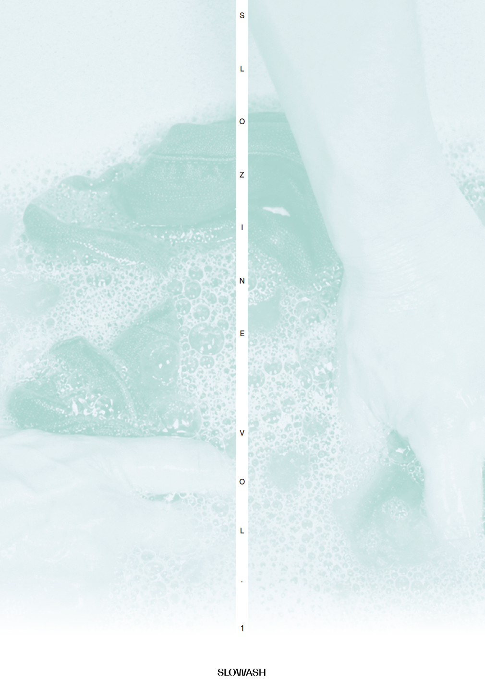
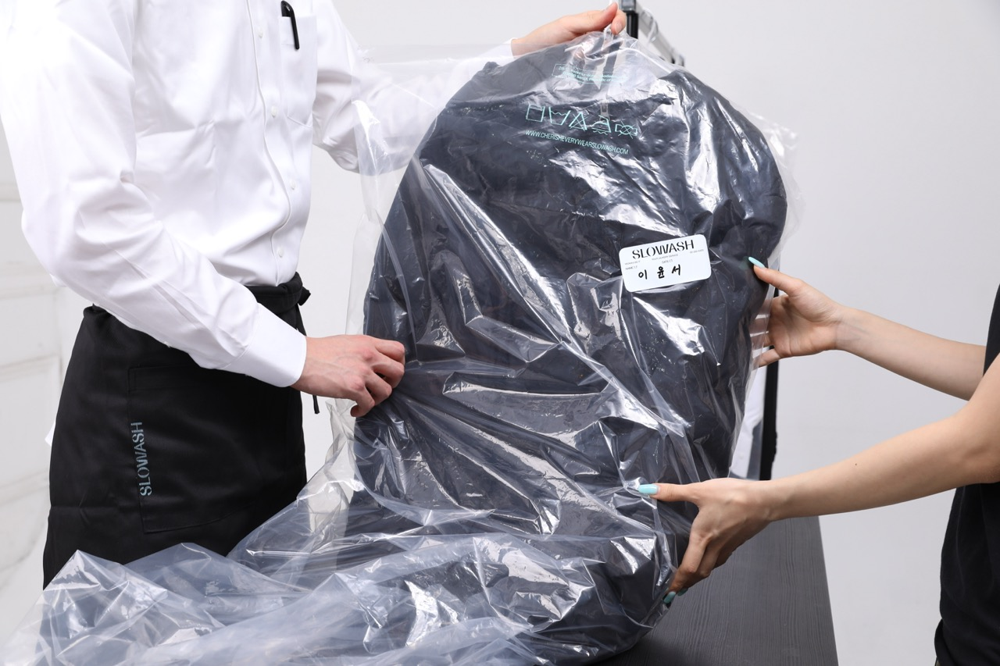
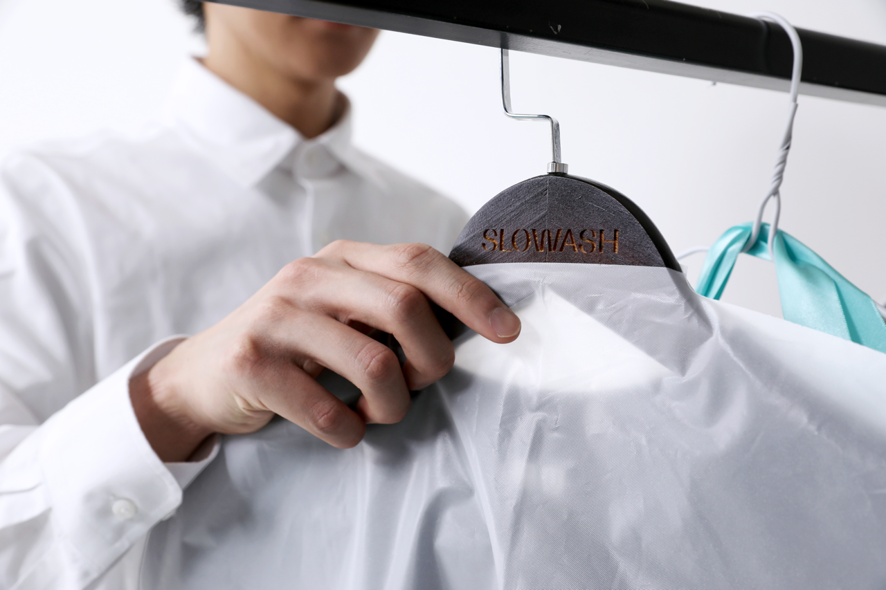
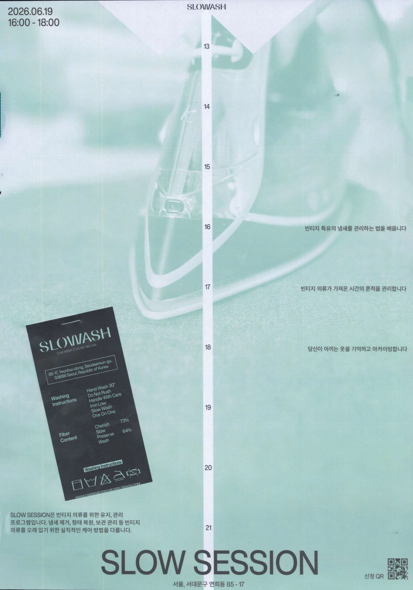
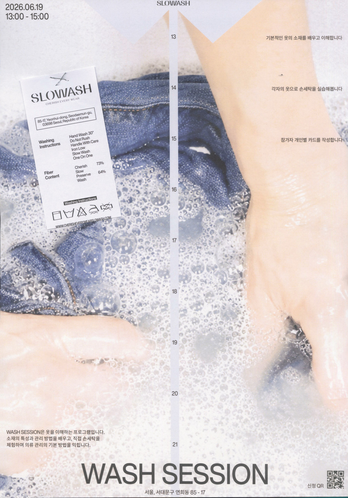
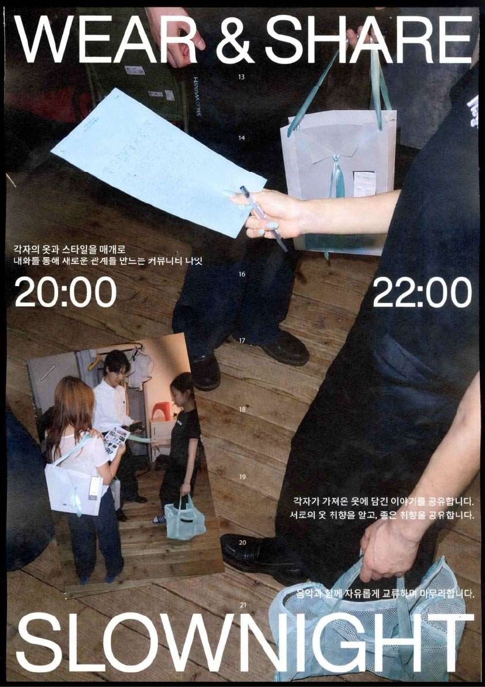

다음 슬로세션 신청하고 싶어요
울 니트 관리법을 다루는 세션이 열리면 참여하고 싶습니다.
브랜드 소개부터 접수, 정기 간행물, 워크숍,
멤버십 히스토리까지 이어지는
웹 기반 세탁 케어 플랫폼.
85-17 Yeonhui-dong, Seodaemun-gu,
Seoul, Republic of Korea
About slowash
slowash는 애착 있는 옷을 섬세하게 케어하고 싶은 사람들을 위한 세탁 서비스입니다. 우리는 한 벌 한 벌을 다른 옷과 섞지 않고 단독 세탁하며, 옷의 소재와 상태를 먼저 살핀 뒤 필요한 방식으로 조심스럽게 다룹니다. 조건에 따른 가격 변동 없이 정찰제를 유지해, 고객이 세탁 전부터 결과를 신뢰할 수 있도록 합니다. 아끼는 옷을 더 오래 입고 싶은 마음, 그 마음을 천천히 오래 지키는 것이 slowash의 방식입니다.
대기업 패션회사에서 일했던 주시영(32)씨가 직원 하나 없이 혼자서 1년 넘게 운영하고 있습니다. 프리미엄 패딩이든 티셔츠 한 장이든 ‘단독 세탁’을 고집합니다. “요즘 젊은 고객들은 자기 옷이 대량 세탁기에서 ‘타인의 옷’과 섞여 마구잡이로 세탁하는 것을 찝찝해하죠.” 세탁비가 일반 세탁소 2배 정도지만 20~30대 단골이 많고, 연희동 사모님과 옷 잘 입는 중년 남성도 종종 찾습니다. 하루 평균 50~70벌만 소화하기 때문에 예정보다 오래 걸리기도 하지만, 그의 섬세한 세탁을 경험한 고객은 묵묵히 기다립니다.
조선일보 인터뷰 발췌.
기본 케어 서비스 및 세탁 기록 제공
패딩 선예약, 워크샵 참여, 1:1 케어노트 제공
우선 예약, 연간 케어 리포트, 시즌 리마인드 및 제휴 혜택 제공
서비스 구조
옷의 소재, 오염, 손상 가능성을 먼저 진단합니다.
세탁 전 의류 상태를 기록하고 필요한 케어 방식을 제안합니다.
일반 의류와 패딩 슬롯을 분리하고, 멤버십 등급에 따라
예약 오픈 시간을 다르게 설정합니다.
단독 세탁과 맞춤 케어를 통해 옷의 형태와 기억을 보존하고,
모든 의류는 개별 기록으로 관리됩니다.
예약페이지
셔츠, 자켓, 니트
다운, 경량 패딩
날짜 선택 후 예약
직접 방문 후 진단
PADDING SLOT
아카이브

아끼는 옷과 더 오래 함께하기 위한 정기간행물: 세탁물 관리법 등을 다룬다.

세탁소에서 세탁한 비포 애프터 사진들을 올리는 갤러리

슬로세션, 워시세션, 슬로나잇 등의 행사 및 워크숍들의 후기를 올리는 공간

아끼는 옷을 천천히 살피고 관리하는 워크숍

소재별 세탁과 오염 관리법을 나누는 세션

옷과 취향, 오래 입는 방식에 대해 이야기하는 밤
커뮤니티
슬로세션, 워시세션, 슬로나잇 등 워크숍 일정을 확인하고 신청 글을 남기는 공간
소재별 세탁, 보관, 얼룩 응급처치 등 옷 관리 경험을 나누는 공간
좋았던 빈티지샵, 수선집, 케어 서비스 정보를 공유하는 공간
울 니트 관리법을 다루는 세션이 열리면 참여하고 싶습니다.
접어서 보관하기보다 통풍되는 천 파우치에 넣어두니 털 눌림이 덜했습니다.
두꺼운 코트류 상태가 좋은 곳이 있어서 공유합니다. 구매 전 안감 오염은 꼭 확인하세요.
마이페이지
빈티지 울 코트 · 6개월 뒤 알림
MINT 등급부터 열람 가능합니다. 클릭하면 이번 의류의 상세 케어노트를 확인할 수 있습니다.
1:1 케어노트
옷의 상태를 무리하게 바꾸기보다, 오래 입어온 질감과 형태를 보존하는 방향으로 케어했습니다.
소매 끝 부분 오염 확인
카라 부위 미세한 변색 진행
원단 전반적으로 양호
금속 부자재 상태 양호
✓ 단독 세탁 진행
✓ 부분 오염 제거
✓ 저온 건조
✓ 원단 컨디션 회복 케어
직사광선을 피해 건조해 주세요.
장기간 보관 시 통풍이 가능한 공간을 권장합니다.
착용 후 먼지를 가볍게 털어주면 오염 누적을 줄일 수 있습니다.
소매 오염은 대부분 제거되었으며, 오래된 착색은 원단 손상을 고려해 무리하게 제거하지 않았습니다. 전체적으로 원단의 질감과 형태를 유지하는 방향으로 작업했습니다.
가을 시즌 착용 전 한 차례 점검을 권장드립니다.
카라 부분은 최대한 자연스럽게 복원했습니다. 다음 계절에도 좋은 상태로 착용하실 수 있을 것 같습니다.